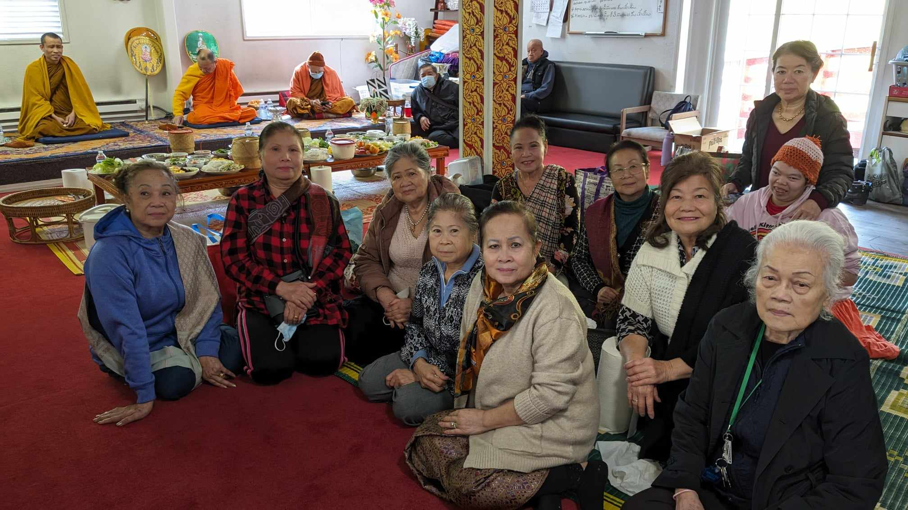
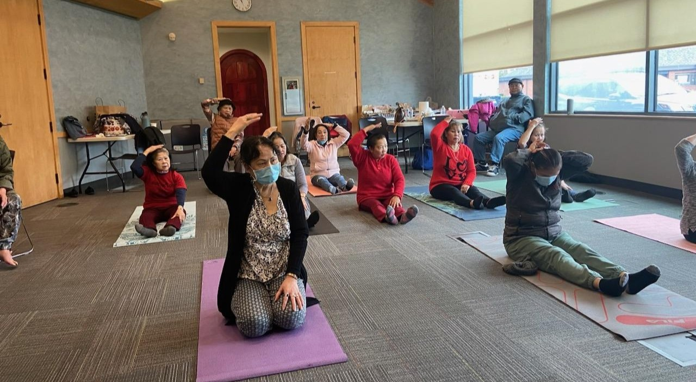

Lao Senior Outreach
seniors are our life, our wisdom, our community -> Our seniors are our life, our wisdom, our community
Empowering Aging with Care and Compassion, Embracing Generations in Celebrating Heritage, and Enriching Lives
Before Mission
- We work towards building a community that fosters vibrant living and integrated cultural sharing. 
Our mission is to eliminate the isolation of Southeast Asian seniors by providing a wide range of culturally familiar programs that encourage social, physical, psychological, and emotional well-being. The Southeast Asian community is experiencing an aging population, no different than the mainstream, but with distinct language, cultural, and service barriers. The Lao Senior Outreach Program understands the importance of ensuring marginalized elders continue to enjoy an active and engaging lifestyle as they age. Our Mission is to eliminate the isolation of Southeast Asian elders by providing a wide range of culturally-familiar programs and resources that encourage social, physical, mental and emotional well-being. We pursue this mission through an integrated, holistic commitment to: Build a community that fosters vibrant living & integrated cultural sharing. Surround the most vulnerable and economically fragile in a supportive community. Provide elders with a familiar sense of inclusion and productivity. Spark joy for older adultsWe work towards building a community that fosters vibrant living and integrated cultural sharing.
After Mission
- Build a community that fosters vibrant living.
- Surround the most vulnerable and economically fragile in a supportive community
- Provide elders with a familiar sense of inclusion and productivity
- Spark joy in older adults.
- We work towards building a community that fosters vibrant living and integrated cultural sharing.
To eliminate the isolation of Southeast Asian seniors through a wide range of culturally familiar programs that encourage social, physical, emotional, and mental wellbeing. We will:
Before Vision
- We work towards building a community that fosters vibrant living and integrated cultural sharing.
Our Vision is to promote healthy aging while enhancing the quality of life for elders in Southeast Asian communities. We offer a wide variety of events, programs, activities and Before Vision Our Vision is to promote healthy aging while enhancing the quality of life for elders in Southeast Asian communities. We offer a wide variety of events, programs, activities and resources designed to enrich everyday life, foster social connections, and alleviate boredom and depression.We work towards building a community that fosters vibrant living and integrated cultural sharing.

Goals
- Providing healthy nutrition and exercise
- Bridging language barriers preventing access to health & social services
- Helping seniors navigate the U.S. healthcare and medical care processes.
- Providing guidance on alternative, non-traditional health interventions
- Function as an Advocate & Mediate between the caregivers, program services for the welfare of our elders.
- Ensuring Digital Access
- Bridging intergenerational gaps through traditions, customs, & cultural sharing
- Provide educational workshops for our seniors on health, nutrition, transportation, public/online safety.
- Educations/Awareness in our rich cultural sharing
- We work towards building a community that fosters vibrant living and integrated cultural sharing. 